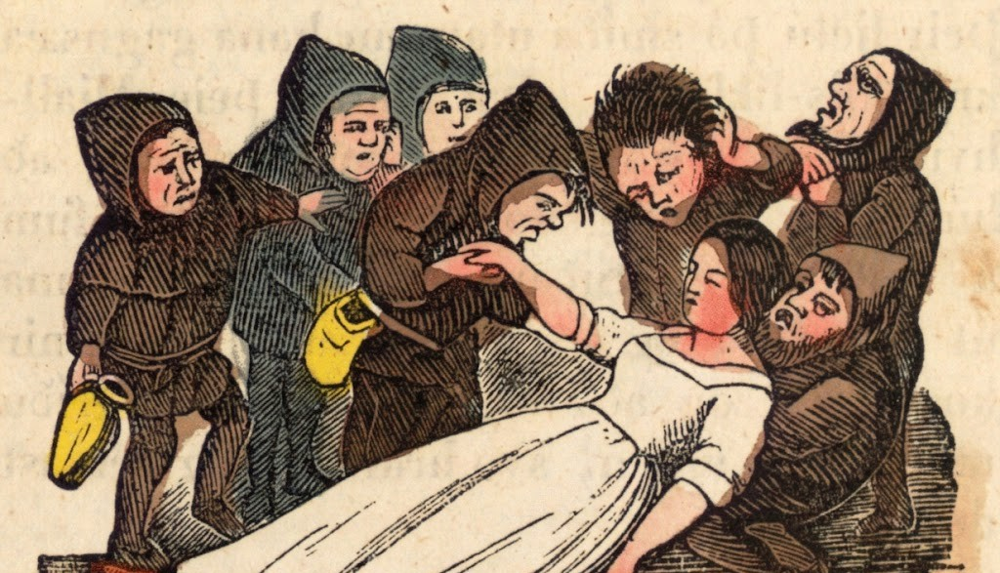

Once Upon a Page
Once Upon a Page

The Magic Mirror

One winter day, a queen is sewing by an ebony-framed window and looking out at the feathery snowflakes. She pricks her finger accidentally, and three drops of blood fall onto the snow. The red looks so beautiful on the white snow that the queen thinks, "If only I had a child as white as snow, as red as blood, and as black as the wood of the window frame."
Soon afterward the queen has a baby daughter whose skin is white as snow, cheeks red as blood, and hair black as ebony. The queen names her Snow White.
The queen dies shortly after giving birth. Within a year, the king has remarried a woman who is beautiful but vain. This new queen has a magic mirror that always tells the truth. Whenever she looks at her reflection, the Queen asks, "Mirror, mirror, on the wall, who's the fairest one of all?" The mirror always replies, "You, O Queen, are the fairest of all."
But Snow White is also becoming a beauty. When the child is only seven, her stepmother happens to ask the magic mirror her usual question. Instead of giving the customary answer, the mirror says, "My queen, you may be the fairest here, But Snow White is a thousand times more fair."
From then on, the queen hates her little stepdaughter. Envy and pride grow in her heart like weeds. When she can no longer bear these feelings, she summons a huntsman and orders him to take Snow White into the forest. There, he must kill her and return with her lungs and liver as proof that he has obeyed the queen.
Deep in the woods, the huntsman pulls out his knife. Weeping, Snow White begs for mercy. The huntsman relents and lets her run off, figuring she'll soon be eaten by wild animals anyway.
Conveniently, a young boar runs past the huntsman. He stabs the boar to death, removes its lungs and liver, and brings them back to the palace, where the evil queen eats them.
Snow White wanders through the forest, lost and alone. Just before nightfall, she finds a little cottage. Inside, all is spotless, dainty, and small. A little table is set with seven little plates and seven little cups; against the wall are seven little beds in a row. Snow White is so hungry that she takes a bite from each plate and drinks a drop of wine from each cup. Then she checks the beds and finds one the right size. She says her prayers and falls asleep.
The little cottage belongs to seven dwarfs who mine ore and minerals in the mountains. This evening they arrive home after dark. When the dwarfs light their lanterns, they realize someone's been in the cottage. Before long they spy the sleeping girl and marvel at her beauty. They decide to let Snow White sleep through the night.
In the morning, the seven dwarfs welcome Snow White to their home and offer to let her stay if she becomes their housekeeper. They warn her not to let anyone into the house: her stepmother may still be trying to kill her.
Snow White settles into her new life, but the dwarfs are right: back at the palace, the magic mirror has again told the queen that Snow White, "with the seven dwarfs in her hideaway," is still the most beautiful female in the land.
Enraged with jealousy, the queen disguises herself as an old peddler woman and makes her way to the dwarfs' cave. There she tricks Snow White into trying on a pretty pair of lace stays, which the queen fastens so tightly that Snow White loses consciousness.
The dwarfs are horrified to find Snow White lying apparently dead. But they notice that her stays have been laced up too tightly. Once the stays are cut open, the girl recovers. The dwarfs tell her the peddler must have been her stepmother and once again warn her not to let anyone through the door.
This scenario repeats itself twice more. On her second visit, the disguised queen puts a poisoned comb into Snow White's hair. Again the dwarfs notice what's happened and revive her. On her third visit, the queen tempts Snow White with a poisoned apple. No sooner does she bite into the apple than she falls dead, and this time the dwarfs are unable to restore her to life.
Snow White looks so much like a person sleeping that the dwarfs can't bear to bury her. Instead, they make her a glass coffin that they place on a mountaintop, where they take turns standing vigil. Her body remains as fresh-looking as ever.
One day a prince finds the coffin and instantly falls in love with the motionless Snow White. He begs the dwarfs to let him have the coffin, saying he'll die himself unless he can gaze at the dead girl. "I will honor and cherish her as if she were my beloved," he assures the dwarfs, who are touched by his words and agree to let him take away the coffin.
When the prince's servants lift the coffin, they stumble momentarily. The coffin jolts, and the jolt knocks out the poisoned piece of apple that had lodged in Snow White's throat. She sits up, alive after all. Overjoyed, the prince proposes. Snow White has "tender feelings for him" by now, and they leave together for the prince's home. Whether the girl bids goodbye to the dwarfs is not mentioned.
The wedding is splendid but for one thing. The evil queen, who has once again heard that Snow White is alive, crashes the party. When she arrives, Snow White spots her at once. The queen is petrified with fear as "iron slippers [which have] already been heated for her over a fire of coals" are placed before her. The queen is made to dance in them until she drops dead.